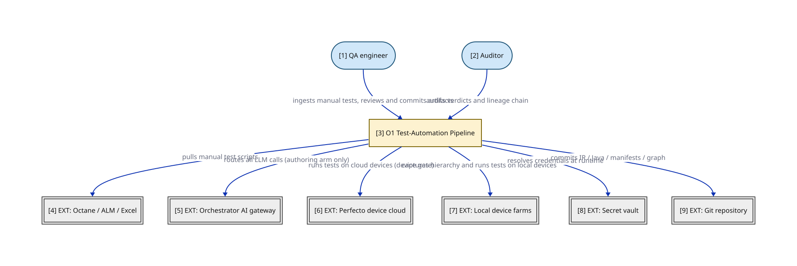
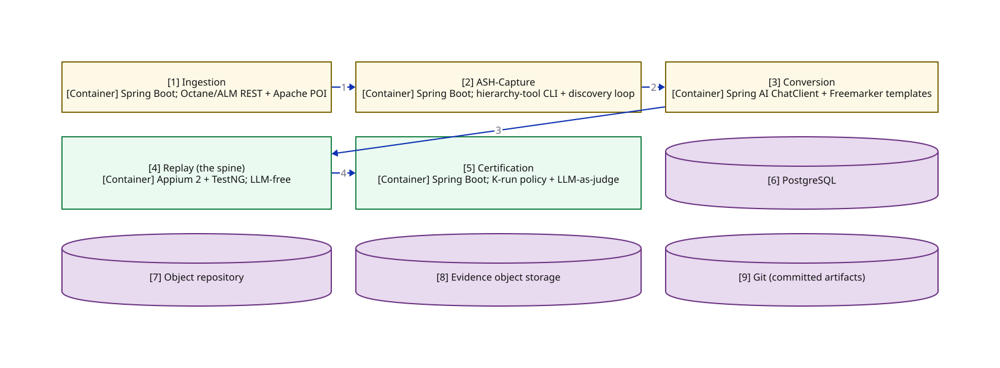
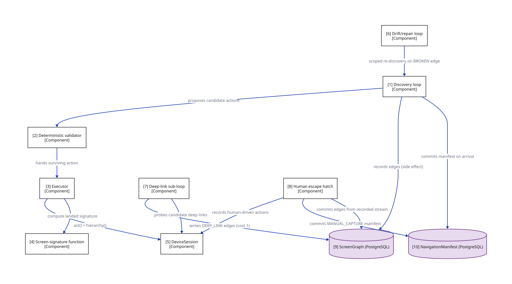

O1 is the LLM-free deterministic replay of committed code.
LLMs are used upstream to author artifacts (IR, locators, Java), but the replay
pipeline itself consumes only committed artifacts and contains no LLM in the execution path
(blueprint-revision-v2.md:73). The "spine" is the deterministic replay pipeline;
the "authoring arm" is everything that feeds it. The handoff between the two halves is a
git commit.
The authoring arm is LLM-bounded and produces committed artifacts; the spine is LLM-free
and consumes only committed artifacts. A2 commits TestCaseIR.json; Code Generation
commits LoginTest.java. The spine reads those commits and never asks the LLM
anything. This is what makes O1 auditable: the executable artifact that produced a verdict is
reviewable, pinned by SHA, and reproducible by anyone with the repo.

| # | Node | Detail the short label hides |
|---|---|---|
| 1 | QA | runs ingestion CLI, reviews and commits generated artifacts |
| 2 | Auditor | audits verdicts and tamper-evident lineage |
| 3 | Pipeline | ACCEPTED: LLM-free deterministic replay of committed code (blueprint-revision-v2); north-star production posture; O3 hybrid is the proposed POC (opened in the Container view) |
| 4 | Octane | manual test script sources; free-form English or structured steps |
| 5 | Gateway | all LLM calls route through one ChatModel interface (blueprint-revision-v2); no direct model vendor SDKs anywhere |
| 6 | Perfecto | pinned device pool, Appium 2, Smart Reporting |
| 7 | LocalDevices | xctools (iOS sim) and adb (Android) for local capture/replay |
| 8 | VAULT | short-lived single-run session tokens (ADR 0013); no long-lived creds held by workers |
| 9 | GIT | system of record for committed IR / Java / manifests / graph |
Key: stadium/pill = a person/role; heavy-stroke rectangle = the software system in focus;
double-bordered rectangle EXT: = an external system we don't own; solid arrow = synchronous call.
Zooming into the system box reveals five modules and four datastores. The spine (replay + certification) is LLM-free; the authoring arm (ingestion + ASH-Capture + conversion) is LLM-bounded. ASH-Capture is PROPOSED (ADR 0014 in flight) — drawn here for completeness but tagged as proposed.

| # | Node | Detail the short label hides |
|---|---|---|
| 1 | ING | A0 Normalizer (LLM) — PROPOSED this session; A1 Parser (deterministic, structure only); A2 Semantic Interpreter (deterministic-first, LLM fallback); emits committed TestCaseIR.json |
| 2 | ASH | PROPOSED ADR 0014 (in flight, parallel thread); automates state-aware hierarchy capture (replaces manual hierarchy-tool run); hybrid: LLM proposes + deterministic validator shortlists; commits NavigationManifest + ScreenGraph edges (opened in the Component view) |
| 3 | CVT | Phase 1: Copilot workspace + prompt library; Phase 2: generation service via Orchestrator AI; structured output via BeanOutputConverter against IR + manifest schemas; emits committed Appium Java (the audit pin) |
| 4 | RPL | Stage 1 static gate: format, mvn compile, Checkstyle, Error Prone, locator-manifest rule; Stage 2 device gate: K runs on Perfecto (K=1 signed-off baseline; K=3/5 is a weeks-3-8+ target — raising K is a CF6 recorded decision), flakiness derivable once K>1; Stage 3 verdict: ReplayReport pins codeCommit SHA; LLM output never touches it; consumes only committed code |
| 5 | CER | applies gates: compile, K/K device passes, semantic fidelity, locator confidence floor; publishes metrics; feeds the flywheel on accept; certification is an attributable individual decision (CF9), never mechanical |
| 6 | PG | single primary store (ADR 0006); TestCaseIR, ReplayReport, lineage chain (ADR 0012); ScreenGraph + NavigationManifest tables (PROPOSED ADR 0014) |
| 7 | OBJ | resolved locators, single-writer discipline; enriched by the flywheel on accept |
| 8 | EVID | immutable, S3-port-backed (ADR 0011); anchors lineage chain heads + graph version JSON |
| 9 | GITD | TestCaseIR.json, LoginTest.java, NavigationManifest, ScreenGraph snapshots |
Key: rectangle = an application or data store (C4 container); cylinder = a data store (datastores ONLY);
module-a / module-b colour = the same module tracked by colour across every view;
[Type] under a name = the element's C4 type; solid arrow = synchronous call.
In plain terms: real test scripts arrive as messy exports — headers, metadata fields, odd phrasing, boilerplate notes. A0's only job is to clean that up into something the next (deterministic) stage can parse reliably. It does not decide what the test means; it just tidies the words.
Purpose. Automate intake. Take free-form English or a manual test script
string (from Octane, Jira, ALM, Excel) and produce a NormalizedIntent that makes
A1's deterministic parser succeed more often.
Input. The raw export, unedited — headers, metadata, numbering, and all.
Example (mocks/o1-spine/NormalizedIntent.input.txt):
=== OCTANE TEST CASE ===
ID: ACC-1042
Title: Login with valid credentials shows welcome
Created: 2024-03-15 Owner: QA Team Priority: HIGH
Steps:
1. Sign in to the app using the test credentials (username/password)
2. Verify that the welcome banner appears on the home screen
Notes: This is a happy path test. Use the QA environment creds.What happens. A0 strips the boilerplate (header, metadata, notes), collapses
phrasing variants to one canonical form ("Sign in" / "log in" / "login" → sign in),
and carries vault references through untouched. Output
(mocks/o1-spine/NormalizedIntent.json, trimmed):
{
"sourceSystem": "octane", "sourceId": "ACC-1042",
"testData": { "username": "vault:user_qa", "password": "vault:pass_qa" },
"normalizedSteps": [
{ "index": 0, "canonicalIntent": "sign in to the app using the test credentials username and password",
"normalizedPhrasing": "sign in", "phrasingVariantsAbsorbed": ["Sign in", "log in", "login"] },
{ "index": 1, "canonicalIntent": "verify the welcome banner appears on the home screen",
"normalizedPhrasing": "verify", "phrasingVariantsAbsorbed": ["Verify that", "check that", "confirm"] }
],
"honestyTags": ["PROPOSED ADR 0014", "Replan R1 D2", "lives outside spine repo", "F1 does not apply"]
}See mocks/o1-spine/NormalizedIntent.prompt.md for the full system prompt this
runs against.
What A0 does NOT do. It does not produce the
TestCaseIR — only A1/A2 do that. It never fills in an action, a locator, or an
assertion; it never touches a device; and it never invents preconditions or steps that weren't
in the source. The data flywheel does not apply to A0 either (renamed from "F1 (flywheel)" —
F1 is the no-model-call fitness function; the name collision was itself an audit hazard).
Why this needs care. A0 reads raw, untrusted text from Octane/Jira/ALM/Excel and writes LLM output back into the pipeline — that is both an injection ingress and an egress, so screening (ADR 0009/F3) is mandatory here, not optional. A0 is PROPOSED and unratified (Replan R1 D2): it cannot ship without its ADR 0009 call-site map, and it must live outside the spine repo (F1 CI-fails any model call there).
A1 is the boundary between "words" and "shape." It takes A0's cleaned intent and turns it into the right number of slots for a test case — without yet deciding what fills each slot. Think of it as building an empty form with the right number of fields, not filling them in.
Purpose. Take the NormalizedIntent and split it into a
partially-filled TestCaseIR skeleton — structure only, no semantics yet.
Input. A0's NormalizedIntent.json (above) — 2 normalized steps.
What happens. A1 splits the intent into N step-slots (here, still 2 — one
per A0 step; A2 is what later expands "sign in" into its 5 sub-actions), recognizes deterministic
patterns like the login pattern, and notes that credentials exist but their values are still
unresolved (they come from the vault at runtime, not from A1). Output
(mocks/o1-spine/TestCaseIR.skeleton.json, trimmed):
{
"sourceSystem": "octane", "sourceId": "ACC-1042",
"steps": [
{ "index": 0, "intent": "sign in to the app using the test credentials username and password",
"recognizedPattern": "login", "credsNote": "present-but-unresolved",
"action": null, "target": { "naturalReference": null, "resolvedLocators": [] },
"assertion": null, "controlFlow": null },
{ "index": 1, "intent": "verify the welcome banner appears on the home screen",
"recognizedPattern": "assertion", "action": null, "assertion": null }
]
}What A1 does NOT do. It does not fill action,
resolvedLocators, assertion, or controlFlow — every one of
those is still null/empty above. It does not expand "sign in" into its 5 sub-steps
(TAP/TYPE/TAP/TYPE/TAP) — that expansion is A2's job, not A1's. A1 is entirely deterministic: no
model call happens here at all.
Output → next stage. This 2-step skeleton is what A2 (below) receives and expands into the final, semantically complete, 6-step committed IR.
Where A1 built the empty form, A2 fills it in with meaning — and only A2's output is committed to the repo. This is the step where "sign in" finally becomes concrete TAP/TYPE actions and "verify welcome" becomes a real assertion.
Purpose. Turn A1's structural skeleton into a semantically complete,
committed TestCaseIR.
What happens. A2 expands compound steps (login → TAP / TYPE / TAP /
TYPE / TAP), normalizes navigation into NAVIGATE + screenContext,
extracts loops into controlFlow, structures vague assertions into
VALUE_CHECK + expected, and flags ambiguity it can't resolve
deterministically.
The A1 → A2 delta, side by side:
| Field | A1 skeleton (2 steps) | A2 output TestCaseIR.json (6 steps) |
|---|---|---|
| step count | 2 | 6 (login expands to 5 + 1 assert) |
action | null | TAP/TYPE/TAP/TYPE/TAP/ASSERT |
target.naturalReference | null | "the username field", "the Login button", etc. |
assertion | null | { kind: "TEXT_EQUALS", expected: "Welcome, QA User" } |
resolvedLocators | [] | [] — still empty in both; no device has been touched yet |
What A2 does NOT do. It leaves resolvedLocators empty — that's
Capture Hierarchy + Locator Resolution's job (§§3–4), not A2's. A2 can fall back to an LLM for
genuinely ambiguous phrasing, but the deterministic path is tried first.
Output. The committed TestCaseIR.json — see
mocks/o1-spine/TestCaseIR.json. This is the file the spine's audit trail ultimately
traces back to.
Before any locator can be resolved, the pipeline needs to know exactly what's on screen — every button, field, and label, with its technical identifiers. This stage is the bridge from "intent" (English words like "the username field") to "concrete elements" (an accessibility ID a script can actually tap).
Purpose. Obtain the live UI view hierarchy from a real device so locators can be resolved deterministically.
What happens. The hierarchy-tool CLI
(blueprint-revision-v2.md:26) opens an Appium session against the device, calls
getPageSource(), and pulls Perfecto's Object Spy + the XCUITest accessibility tree
in parallel. It writes out three artifacts, each answering a different question:
| File | Answers | Excerpt (mocks/o1-spine/) |
|---|---|---|
LoginScreen.pageSource.xml | "What is literally on screen?" — the full, noisy Appium dump (status bar, nav bar, logo, every label) | |
LoginScreen.pruned.json | "What actually matters?" — interactive elements + their ancestor chain only, sized to fit an LLM's context window | |
LoginScreen.objectSpy.json | "What locator strategies are available, and how confident is each?" — Perfecto's ranked candidates | |
What it does NOT do. It does not choose a locator — that's §4's job. It just records everything that could plausibly be used, from three independent angles (full dump, pruned view, and Perfecto's own smart-locator engine).
This manual stage is what ASH-Capture (Part II) automates. Today a human runs the CLI and steers the app to the right screen; ASH-Capture removes that human.
This is where the pipeline decides, for every English phrase like "the username field," which exact technical locator to use. It tries five sources in a strict order, cheapest and most trustworthy first, and only reaches for an LLM when everything deterministic has failed.
Purpose. For every naturalReference in the IR, pick the best
concrete locator using a fixed, auditable cascade.
| # | Node | Detail the short label hides |
|---|---|---|
| 1 | REPO | source 1 of 5 — the object repository (existing resolved locators, single-writer discipline); deterministic, no model call |
| 2 | PAGESRC | source 2 of 5 — the live getPageSource() dump (LoginScreen.pageSource.xml); deterministic, no model call |
| 3 | SPY | source 3 of 5 — Perfecto's Object Spy smart-locator candidates (LoginScreen.objectSpy.json); deterministic, no model call |
| 4 | VLM | source 4 of 5 — a vision-language model confirms the element is visually present and tappable from a screenshot; a genuine model call, routed through the Gateway (ADR 0013); screening call-site adr-0009:locator-fallback-egress |
| 5 | LLMGUESS | source 5 of 5, last resort — proposes a locator from the pruned tree text alone (no screenshot); genuine model call; does NOT invent elements outside the pruned tree (returns NO_MATCH instead); does NOT execute anything on a device |
| 6 | MANIFEST | every candidate carries a confidence and a source; committed as LocatorCandidate.manifest.json |
| 7 | SG | the static gate's no-orphan-locator rule: every locator used in the committed Java must appear in this manifest or the object repository |
Key: cylinder = a data store (datastores ONLY); dash-bordered rectangle = a runtime process, not a deployable; solid arrow = synchronous call.
Cascade order. ACCESSIBILITY_ID > id > class chain > xpath
(strategy preference), tried against sources
OBJECT_REPO > PAGE_SOURCE > OBJECT_SPY > VLM > LLM-guess (in that order).
A candidate is accepted once its confidence clears a floor (0.85); the first three sources are
deterministic string/tree matching — no model call at all.
Sometimes the deterministic sources find a candidate but reject it — not because it's missing,
but because it doesn't clear the confidence floor. Here's a real case: the reference is "the
Forgot Password link," but the actual element is typed as a Button, not a link. That
type mismatch drags every deterministic candidate's confidence below 0.85.
Input (mocks/o1-spine/LocatorResolution.fallback.input.json,
trimmed) — note it records exactly why each deterministic source fell short, so the fallback is
auditable, not a black box:
{
"naturalReference": "the Forgot Password link", "cascadeFloor": 0.85,
"deterministicCandidatesTried": [
{ "source": "OBJECT_REPO", "status": "MISS" },
{ "source": "PAGE_SOURCE", "status": "BELOW_FLOOR",
"candidate": { "value": "forgotPasswordButton", "confidence": 0.72 },
"reason": "type mismatch: naturalReference says 'link', element type is XCUIElementTypeButton" },
{ "source": "OBJECT_SPY", "status": "BELOW_FLOOR", "candidate": { "confidence": 0.74 } }
]
}Output (mocks/o1-spine/LocatorResolution.fallback.output.json):
{
"naturalReference": "the Forgot Password link", "status": "RESOLVED",
"proposedLocator": { "strategy": "ACCESSIBILITY_ID", "value": "forgotPasswordButton",
"confidence": 0.91, "source": "LLM-guess" },
"reasoning": "The pruned tree has exactly one element whose label 'Forgot Password?' matches the reference; the 'link' vs 'Button' type mismatch is a common UI-labeling looseness, not a true mismatch."
}See mocks/o1-spine/LocatorResolution.fallback.prompt.md for the full prompt. If a
human evaluator accepts this proposal, it's appended to
LocatorCandidate.manifest.json tagged source: "LLM-guess" — the static
gate's no-orphan-locator rule applies to it exactly as it would to any deterministic locator.
Turns the committed IR + locator manifest into committed Appium Java. Runs offline, once per
IR version, and its output is reviewed and committed by an engineer before any device runs.
Credentials come via vault(...) calls, never literals. The committed
LoginTest.java is the audit pin — its git SHA is what
ReplayReport.codeCommit pins.
The end-to-end flow below shows where the spine begins. The authoring arm (A0 → A1 → A2 → ASH-Capture → locator resolution → code gen) is LLM-bounded; the spine (static gate → device gate → verdict) is LLM-free and consumes only committed artifacts. Two bounded loops (static-gate repair, ASH-Capture discovery) and the flywheel close-out are visible.

| # | Node | Detail the short label hides |
|---|---|---|
| 1 | A0 | PROPOSED this session (unratified — Replan R1 D2); free-form English / manual script → NormalizedIntent; does NOT produce TestCaseIR; data flywheel does not apply; ADR 0009 screening required at intake + egress; concrete mocks: NormalizedIntent.input.txt → NormalizedIntent.prompt.md → NormalizedIntent.json |
| 2 | A1 | structure only; splits into N steps, raw intent per step; does NOT fill action/locator/assertion/controlFlow; concrete mock: TestCaseIR.skeleton.json |
| 3 | A2 | deterministic-first, LLM fallback; expands steps, normalizes navigation, extracts loops, flags ambiguity; emits committed TestCaseIR.json; concrete mock: TestCaseIR.json (the committed handoff to the spine) |
| 4 | ASH | PROPOSED ADR 0014; drives app to screenContext, dumps hierarchy (pageSource + pruned + objectSpy); commits NavigationManifest + ScreenGraph edges; concrete mocks: ASHCapture.discovery.*, ASHCapture.deeplink.*, ASHCapture.driftrepair.input.json; see the discovery-loop diagram (§11.5) for the internal runtime cycle |
| 5 | LOC | deterministic cascade: accessibility id > id > class chain > xpath; sources: OBJECT_REPO > PAGE_SOURCE > OBJECT_SPY > VLM > LLM-guess; emits LocatorCandidate.manifest.json; concrete mocks: LocatorResolution.fallback.{input.json,prompt.md,output.json} (the LLM fallback path); see the locator-cascade diagram (§4) for the full cascade |
| 6 | CG | IR + manifest → Appium Java (page objects, BaseTest); credentials via vault() calls, never literals; emits committed LoginTest.java (the audit pin); concrete mock: LoginTest.java |
| 7 | SG | THE SPINE BEGINS — LLM-free from here; format, mvn compile, Checkstyle, Error Prone, locator-manifest rule; FAIL → loop back to code gen (bounded); concrete mock: StaticGate.report.json |
| 8 | DG | Perfecto; K=1 signed-off baseline (K=3/5 is a weeks-3-8+ target — raising K is a CF6 recorded decision); outcome fields let flakiness STABLE / FLAKY / UNKNOWN be derived once K>1 |
| 9 | VR | pins codeCommit SHA (the audit pin); machine PASS (static + device) is a precondition — CERTIFIED is issued by an attributable individual (CF9), never mechanically; healsApplied: NONE (spine does not self-heal); concrete mock: ReplayReport.json |
| 10 | HE | validates result against original input intent; PASS → flywheel; FAIL → loop back to A0 with error (bounded — iteration budget + owner are an OPEN Replan R1 item) |
| 11 | FW | accepted locators → object repository; accepted exemplars → prompt library; accept/reject labels → preference training data (O6 ensemble) |
Key: cylinder = a data store (datastores ONLY); dash-bordered rectangle = a runtime process, not a deployable; module-a / module-b colour = the same module tracked by colour across every view; solid arrow = synchronous call.
Static gate rejects bad generations in seconds before any device minute:
format, mvn compile (against the test project — Appium client, TestNG, page-object
library — not against the IPA/APK), Checkstyle, Error Prone, and the locator-manifest
rule (every locator must be in the repo or manifest). On failure, loops back to code gen (bounded).
Device gate runs the compiled Java on real Perfecto devices K times. K=1 is the signed-off baseline (spec M10b — outcome fields are designed so K-of-K becomes derivable later); K=3 conversion / K=5 certification is a weeks-3-8+ target, and raising K is a CF6 recorded decision (Replan R1 D6).
Verdict emits the ReplayReport — the single feedback artifact both phases
consume. Static PASS + device pass are preconditions; CERTIFIED itself
is an attributable individual decision (CF9), never emitted mechanically.
healsApplied is absent in O1 — the spine does not self-heal (contrast
with O2/O3 where that field is the locus of the audit argument).
The human evaluator validates the test result against the original input intent (not just the IR). PASS → feed accepted locators and exemplars into the flywheel. FAIL → loop back to A0 with the error + original intent (this loop must be bounded — the iteration budget and its owner are an OPEN Replan R1 item). The flywheel makes Phase 1 (human-driven, Copilot-assisted) the asset factory and data flywheel for Phase 2 (programmatic, via Orchestrator AI) — accepted conversions become exemplars, human corrections become preference pairs, diagnose-and-fix sessions become the healing agent's few-shot library.
PROPOSED ADR 0014 honesty tag; the spine/blueprint elements in Part I are decided.
The spine contract is unchanged — the spine never calls the LLM, never searches the graph.
(Review correction: no decided spine stage consumes the NavigationManifest — it is a
capture provenance record; promoting it to a spine input is itself an ADR-scoped change with
schema, screening, and lineage obligations.)
ASH-Capture lives in the authoring arm, upstream of the spine. It replaces the manual
hierarchy-tool run (§3). It drives the app to a target screenContext,
settles it, and dumps the hierarchy — with a target of no human in the loop
for ~90% of screens and a human escape hatch for the ~10% it can't (both
unmeasured targets pending the §12.4 spike).
If ASH-Capture breaks entirely, the spine keeps working off existing manifests and manual
capture remains the escape hatch — the survivability guarantee.
signature(screen) = (skeletonHash, titleAnchor). The skeletonHash is the hash
of sorted (elementType, accessibilityId) tuples — excludes text content, so dynamic
data (balances, timestamps) does not change the hash. The titleAnchor is the screen's
accessibility title element, auto-discovered (not app-team-declared). Two
screens collide only if both match. A screen with no discoverable title anchor is flagged
ANCHOR_LESS and routed to the human escape hatch — the one structural limit of
"no app-team cooperation."
ScreenGraph schema (committed, versioned, auditable-not-gated)Nodes = screen signatures; edges = deterministic locator-actions with costs
(DEEP_LINK=1 < SCROLL/TAP=2 < TYPE=3) so graph search minimizes cost and
prefers deep links. Each edge carries provenance (DISCOVERY | GRAPH_SEARCH |
DEEP_LINK_PROBE | DRIFT_REPAIR | MANUAL_CAPTURE) and status (VERIFIED | UNVERIFIED | BROKEN).
On each release, edges flip to UNVERIFIED and re-verify lazily on first capture.
Zooming into the ASH-Capture container shows the discovery loop, deterministic validator, DeviceSession abstraction, and the two committed artifacts (ScreenGraph, NavigationManifest). Every node here is PROPOSED (ADR 0014 in flight). The spine consumes only the committed manifest; none of these components run in the spine.

| # | Node | Detail the short label hides |
|---|---|---|
| 1 | DISC | PROPOSED ADR 0014; LLM proposes ≤K candidate next actions from screenshot + pruned tree; budgets: ≤15 actions, ≤60s/step, ≤3 no-progress strikes, 10-min session cap; records every transition as a graph edge (side effect); concrete mocks: ASHCapture.discovery.{input.json,prompt.md,output.json} — HomeScreen → AccountOverview scenario; see §11.5's discovery-loop diagram for the step-by-step runtime cycle |
| 2 | VAL | PROPOSED ADR 0014; filters by locator cascade + confidence floor; denylist (logout/transfer/pay/confirm) — defense-in-depth, not the safety guarantee; safety is environmental: lower test env, resettable data |
| 3 | EXEC | PROPOSED ADR 0014; applies the surviving action via DeviceSession.act(); re-dumps hierarchy, computes screen signature, checks arrival |
| 4 | SIG | PROPOSED ADR 0014; signature = (skeletonHash, titleAnchor); skeletonHash = hash of sorted (elementType, accessibilityId) tuples, excludes text; titleAnchor = auto-discovered accessibility title element (no app-team ask); ANCHOR_LESS screens → human escape hatch |
| 5 | DEV | PROPOSED ADR 0014; abstraction: login(), screenshot(), hierarchy(), act(), launchDeepLink(); implementations: PerfectoSession, LocalIOSSession, LocalAndroidSession; normalized hierarchy output; locator source field marks backend |
| 6 | DRIFT | PROPOSED ADR 0014; on release: edges flip UNVERIFIED, re-verify lazily; on capture failure: mark edge BROKEN, scoped re-discovery from last good node; graph versioned per appVersion; supersede-not-update (ADR 0012); concrete mock: ASHCapture.driftrepair.input.json; surfaces the signature re-keying defect (Replan R1 D1/S1) — reuses the discovery prompt unchanged |
| 7 | DEEP | PROPOSED ADR 0014; static parse (APK intent filters / iOS associated domains) + LLM-proposed routes + deterministic probe; stores confirmed links as DEEP_LINK edges (cost 1), supplemental not replacing; concrete mocks: ASHCapture.deeplink.{input.json,prompt.md,output.json}; known gap preserved: the probe has no URL denylist (Replan R1 D1) |
| 8 | HATCH | PROPOSED ADR 0014; triggered by discovery failure or ANCHOR_LESS screen (<10% target); human steers; system records action stream and commits manifest + edges; provenance: MANUAL_CAPTURE |
| 9 | GRAPH | PROPOSED ADR 0014; nodes = screen signatures, edges = deterministic locator-actions; snapshot per graph_version_sha; auditable-not-gated; cost weights: DEEP_LINK=1 < SCROLL/TAP=2 < TYPE=3 |
| 10 | MAN | PROPOSED ADR 0014; per-screen deterministic path the spine replays; rootMode FRESH_LOGIN or DEEP_LINK; always starts from a known root; provenance: DISCOVERY | GRAPH_SEARCH | DEEP_LINK_PROBE | DRIFT_REPAIR | MANUAL_CAPTURE |
Key: rectangle = a grouping of code inside a container (C4 component); cylinder = a data store (datastores ONLY); solid arrow = synchronous call; [Type] under a name = the element's C4 type.
NavigationManifest schema (capture provenance record — PROPOSED)Per-screen deterministic path. rootMode is FRESH_LOGIN (default)
or DEEP_LINK (deep link lands the root screen directly). Manifests always start from a known
root, so every capture is reproducible from the same starting state. provenance
tracks whether the path came from an IR, a graph search, a discovery run, or a manual capture.
Status honesty (review fix): no decided spine stage consumes this artifact —
the committed Java remains the audit pin; if ADR 0014 promotes the manifest to a
replayed spine input (reading steps + rootMode), that promotion
carries its own schema, ADR 0009 screening, and ADR 0012 lineage obligations.
In plain terms: most of the time, ASH-Capture just replays a path it already knows — no LLM involved at all. The LLM is reached only when the screen is genuinely new or a known path stopped working.
Warm path (target ~90% of runs — unmeasured; no LLM). Screen already in the graph with a VERIFIED path → graph search picks the cheapest route, replays the steps, dumps the hierarchy. Done.
Cold start / drift (the LLM path) — the hybrid loop, step by step:
DeviceSession.act() — the LLM itself never touches the device.Budgets: ≤15 actions, ≤60s/step, ≤3 no-progress strikes, 10-min session cap.

| # | Node | Detail the short label hides |
|---|---|---|
| 1 | DUMP | dumps the current screen's hierarchy and computes its signature; entered only when the screen is NOT already in the graph, or its stored path is BROKEN |
| 2 | PROPOSE | proposes ≤K (maxProposalsK=3) candidate next actions, ranked by confidence; concrete mock: ASHCapture.discovery.{input.json,prompt.md,output.json} — HomeScreen → AccountOverview, ranks accountsTab 0.90 / hamburgerMenu 0.62 / paymentsTab 0.48 |
| 3 | VALIDATE | filters by locator cascade + confidence floor (0.85), the denylist, known graph edges, and remaining step budget |
| 4 | EXECUTE | applies the one surviving action via DeviceSession.act(), re-dumps, computes the newly landed signature |
| 5 | CHECK | success predicate: landed signature equals target signature. Known defect (Replan R1 D1/S1): compares against the stored target, so a legitimately changed screen can never match and the loop deterministically exhausts its budget into the escape hatch |
| 6 | GRAPH | the edge (from → to) is recorded as a side effect of EXECUTE, before the arrival check even runs |
| 7 | MAN | committed only on arrival (signature == target); a failed loop commits nothing here and falls through to the escape hatch instead |
| 8 | HATCH | triggered by 3 no-progress strikes, budget exhaustion, the 10-min session cap, or an ANCHOR_LESS screen |
Key: rectangle = a grouping of code inside a container (C4 component); cylinder = a data store (datastores ONLY); dash-bordered rectangle = a runtime process; solid arrow = synchronous call.
Screening (ADR 0009). Every LLM ingress/egress in this loop is a screening
call site (adr-0009:ash-discovery-proposer-egress); the map belongs in ADR 0014.
The loop cannot ship without it.
The single biggest open risk. The success predicate in step 5 compares against the stored signature from before. On a screen that legitimately changed — exactly the case discovery exists to handle — the loop can never match, so it deterministically burns its whole budget and lands in the human escape hatch every time. Until a signature re-keying mechanism is designed, this defect alone means the <10% escape-hatch target fails at every release. This is not a minor edge case — it is the load-bearing open question for whether ASH-Capture's automatic-update story works at all.
Apps change every release. This loop is what keeps the graph honest without re-discovering everything from scratch each time.
Purpose. Keep the ScreenGraph correct as the app changes,
without paying the full discovery cost for screens that didn't change.
What happens. On a monthly release (new appVersion), every edge
flips to UNVERIFIED — nothing is rebuilt upfront. Instead, re-verification happens
lazily, the first time each screen is needed: unchanged screens replay their known steps, the
signature matches, and the edge flips back to VERIFIED — no LLM. Changed screens
(~20% per release, unmeasured) land on a different signature, get marked BROKEN, and
trigger a scoped re-discovery from the last known-good node — repairing just that
sub-path, not the whole graph.
Worked example (mocks/o1-spine/ASHCapture.driftrepair.input.json,
trimmed):
{
"trigger": "CAPTURE_FAILURE",
"brokenEdge": { "from": "HomeScreen", "to": "AccountOverview", "status": "BROKEN",
"failureReason": "landed signature h_acctov_7a2b != stored signature h_acctov_9c1d — screen changed in 8.5.0" },
"lastKnownGoodNode": { "screen": "HomeScreen", "status": "VERIFIED" },
"scope": "SCOPED_REDISCOVERY",
"promptReuse": "ASHCapture.discovery.prompt.md",
"promptReuseNote": "This reuses the discovery loop proposer prompt (§11.5 step 2) unchanged — only the loopState (starting screen, target) is narrower. No separate prompt is needed."
}What it does NOT do. It does not re-run discovery from the root, and it does
not need its own LLM prompt — it reuses the exact discovery-loop prompt from §11.5, just scoped
to a narrower target. It also inherits that loop's known defect: if AccountOverview
genuinely changed in the new release (the very case this repair exists for), the stored-signature
comparison can never match, and the repair will exhaust its budget into the escape hatch every
time — the same signature re-keying gap called out in §11.5.
The graph is versioned per appVersion; diffs across releases are auditable.
Some screens can be reached instantly via a deep link instead of tapping through the UI. This loop discovers which ones — it never invents links the app doesn't already support.
Purpose. Discover existing deep links and store confirmed ones as fast (cost-1) graph edges, supplementing — never replacing — the tap-based graph.
What happens, in three steps: (1) a deterministic static parse
of the APK's intent filters / iOS's associated domains extracts the URL scheme and known hosts
(iOS yields scheme only — routes live in code); (2) the LLM proposes candidate
routes for a target screen, working from app docs and screen titles, always within that
already-parsed scheme; (3) a deterministic probe launches each candidate and
checks the landed signature — only confirmed matches become DEEP_LINK edges
(cost 1).
Worked example (mocks/o1-spine/ASHCapture.deeplink.{input,output}.json,
trimmed) — proposing routes toward AccountOverview within the known
erica:// scheme:
{ "proposedRoutes": [
{ "rank": 1, "url": "erica://accounts/overview", "confidence": 0.85,
"reasoning": "Direct match to the target title as a sub-route of the known 'erica://accounts' host." },
{ "rank": 2, "url": "erica://accounts/details", "confidence": 0.62 },
{ "rank": 3, "url": "erica://accountoverview", "confidence": 0.40 }
] }What it does NOT do. The LLM never invents a new scheme — only routes within the already-parsed one. It never re-proposes a route already confirmed. And it never executes anything — that's the deterministic probe's job.
Security gap — surfaced, not hidden. The probe currently has
no URL denylist: the validator's action denylist (logout/transfer/pay/confirm)
covers UI taps, but not deep-link URLs. A probed route like erica://transfer?...
could execute and, if confirmed, persist as the preferred cost-1 edge. A URL
allow/deny-list is an open Lane-2 ADR 0014 item (Replan R1 D1) — until it ships, the LLM's own
self-restraint (never proposing destructive-looking routes) is the only line of defense.
DeviceSession abstraction: login(), screenshot(),
hierarchy(), act(), launchDeepLink(). Three
implementations: PerfectoSession (cloud), LocalIOSSession (xctools + Appium XCUITest),
LocalAndroidSession (adb + Appium UiAutomator2). hierarchy() returns a normalized
form; the locator source field marks which backend produced each locator, so
audits know which captures were Perfecto vs local.
Triggered by discovery failure (budget exhausted / no-progress / ANCHOR_LESS screen /
unreachable state). The human manually navigates to the target; the device session records
every action; the system commits the manifest + edges from that recorded stream with
provenance: MANUAL_CAPTURE. The human only steers; the system records — mirroring
the blueprint's Phase-1 pattern. Over releases, the escape-hatch bucket should shrink as
anchors get discovered and edges get verified.
| Trade-off | Resolution |
|---|---|
| Determinism vs coverage | Hybrid by design; graph = deterministic cache, discovery = non-deterministic frontier |
| Auditability vs maintenance | Graph is auditable-not-gated; drift loop is the maintenance cost |
| Autonomy vs app-team cooperation | Anchors auto-discovered, no app-team ask; escape hatch covers the gap |
| Safety | Environmental (resettable test env, "prod-grade data"); denylist is defense-in-depth only. "Prod-grade data" is undefined — production-derived data flips ADR 0010's PII condition (Replan R1 D4) |
| Session | 10-min, from-root, cheap re-login via stored creds |
| Deep links | Supplemental, prefer-when-available; can't fully cover iOS |
| Speed vs 100% | Deep-link cost-1 edges optimize speed; graph + escape hatch chase 100% discoverability |
>90% automated via graph replay + discovery; <10% human
escape hatch for extreme/boundary failures — both unmeasured targets
(falsifiable claims pending the §12.4 spike), and the <10% figure collapses while the
§11.5 re-keying defect stands. Open watch-items: (1) the
ANCHOR_LESS bucket size is the one place "no app-team cooperation" bites —
measure early on a real release; (2) the deep-link "synthesis" interpretation is
discovering existing links and storing them as edges, not inventing new ones;
(3) the discovery success predicate needs signature re-keying before any
measurement — without it, changed screens route to the hatch by construction
(Replan R1 S1 precedes S2).
NEW (proposed this session, not in any ADR): the ASH-Capture subsystem,
the hybrid discovery loop, the NavigationManifest and ScreenGraph
artifact types, the screen-signature function, the deep-link sub-loop, the drift/repair
loop, the human escape hatch, the DeviceSession abstraction, the budgets, the
>90%/<10% coverage framing (targets, unmeasured), the ANCHOR_LESS routing,
and the A0 Normalizer (Part I §2.0 — corrected: the first draft mislisted A0
as already-planned; it is NEW, unratified, and needs its ADR 0009 screening map — Replan R1
D2). These need ADR 0014 (and, for A0, its own ratification) before implementation.
ALREADY PLANNED (in existing ADRs / blueprint / user constraints): the
LLM-free spine (blueprint-revision-v2.md:73), the hierarchy-tool
(line 26), the pruned tree (line 115), the locator cascade, credential isolation (ADR 0013),
tamper-evident lineage (ADR 0012), the Phase-1 pattern, the data flywheel, the K-run policy
(K=1 signed-off baseline; raising K is a CF6 recorded decision),
the monthly release cadence, the 10-min session + stored creds + lower test env, and the
"erica" deep-link scheme. ASH-Capture inherits all of these; it does not change them.
Spine contract (unchanged): the spine consumes only committed artifacts, runs no LLM / graph search / discovery, holds no long-lived creds (ADR 0013), and pins every verdict to a committed SHA (ADR 0012). If ASH-Capture fails, the spine continues off existing manifests and manual capture remains the escape hatch.
Decision: store the ScreenGraph in PostgreSQL. The graph is small (hundreds of nodes, thousands of edges); Dijkstra runs in microseconds in process memory, so no graph DB traversal engine is needed — only a store to hold and version the graph, which Postgres does. The existing ADRs already chose Postgres as the single primary store, and the graph is audit-grade data that must join the tamper-evident lineage — noting ADR 0012 today defines per-conversion chains only, so a graph-version chain is an ADR 0012 amendment (Replan R1 D3) — easiest if it lives in the same store. Adding a graph DB would introduce a second system of record (violating ADR 0006) plus backup/DR/security-review burden, for a few thousand edges.
Three tables, versioned by snapshot (append-only, matching ADR 0012's supersede-not-update
semantics): screen_graph_versions (one row per committed graph version, the audit
pin), screen_graph_nodes, screen_graph_edges. Each committed graph
is a full snapshot keyed by graph_version_sha; drift repair writes a new
version (with prev_version_sha pointing at the prior one). Diffing two releases
= comparing their node/edge sets. Graph mutations route through the existing outbox (ADR 0007)
so they join the lineage chain; each version's full JSON is anchored to object storage via the
ADR 0011 port as immutable evidence.
When the answer would flip: a graph DB would be justified only if the graph grew to millions of edges, traversal became the dominant workload with complex multi-hop patterns SQL expresses poorly, or multiple services needed concurrent graph traversal at scale. None apply to a per-app screen graph. If one ever does, Postgres stays the system of record and a graph DB could be added in front as a traversal cache later — a future optimization, not a day-one decision. This belongs in ADR 0014 (touches ADRs 0006/0007/0011/0012).
Every stage described above has a concrete mock backing it — real (illustrative) JSON, XML,
Java, and LLM prompts under mocks/o1-spine/, all built around one scenario
(ACC-1042 — "Login with valid credentials shows welcome"). The full index, a
pipeline-flow ASCII diagram, and a detailed write-up of all four LLM call sites lives in
mocks/o1-spine/README.md. Condensed pointers:
| Stage | Mock files |
|---|---|
| §2.0 A0 — Normalizer | NormalizedIntent.input.txt, NormalizedIntent.prompt.md, NormalizedIntent.json |
| §2.1 A1 — Parser | TestCaseIR.skeleton.json |
| §2.2 A2 — Semantic Interpreter | TestCaseIR.json (committed handoff to the spine) |
| §3 Capture Hierarchy | LoginScreen.pageSource.xml, LoginScreen.pruned.json, LoginScreen.objectSpy.json |
| §4 Locator Resolution (deterministic) | LocatorCandidate.manifest.json |
| §4.1 Locator Resolution (LLM fallback) — decided spine | LocatorResolution.fallback.{input.json,prompt.md,output.json} |
| §5 Code Generation | LoginTest.java |
| §6.1 Static Gate | StaticGate.report.json |
| §6.2–6.3 Device Gate / Verdict | ReplayReport.json |
| §11.5 ASH discovery loop — PROPOSED ADR 0014 | ASHCapture.discovery.{input.json,prompt.md,output.json} |
| §11.6 ASH drift/repair — PROPOSED ADR 0014 | ASHCapture.driftrepair.input.json (reuses the discovery prompt) |
| §11.7 ASH deep-link sub-loop — PROPOSED ADR 0014 | ASHCapture.deeplink.{input.json,prompt.md,output.json} |
The four LLM call sites, at a glance:
| Call site | Status | Key open item |
|---|---|---|
| 1. Locator Resolution fallback | Decided spine | none |
| 2. Discovery loop proposer | PROPOSED ADR 0014 | signature re-keying (Replan R1 D1/S1) |
| 3. Deep-link route proposer | PROPOSED ADR 0014 | URL denylist gap (Replan R1 D1) |
| 4. Drift/repair re-discovery | PROPOSED ADR 0014 | reuses #2's prompt and its open defect |
Generated walkthrough combining o1-pipeline-walkthrough.md with C4-flavored
diagrams rendered via the generating-architecture-diagrams skill (D2 → lint →
self-audit, all six views PASS). Diagrams live in o1-diagrams/; their IRs and
detail tables are co-located there. ASH-Capture elements carry PROPOSED ADR 0014
honesty tags per the skill's no-invented-facts rule. Mock artifacts live in
mocks/o1-spine/ (22 files + index).